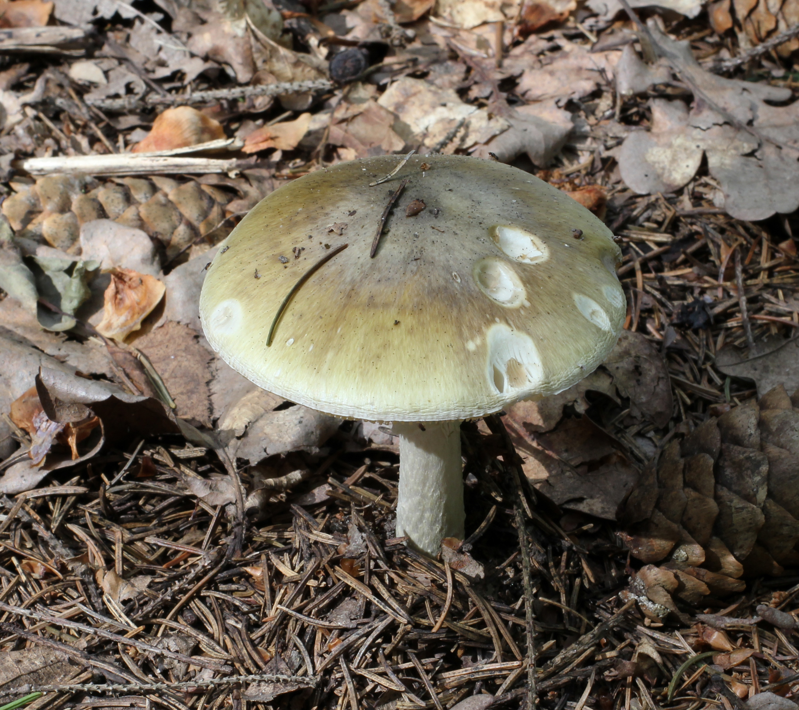
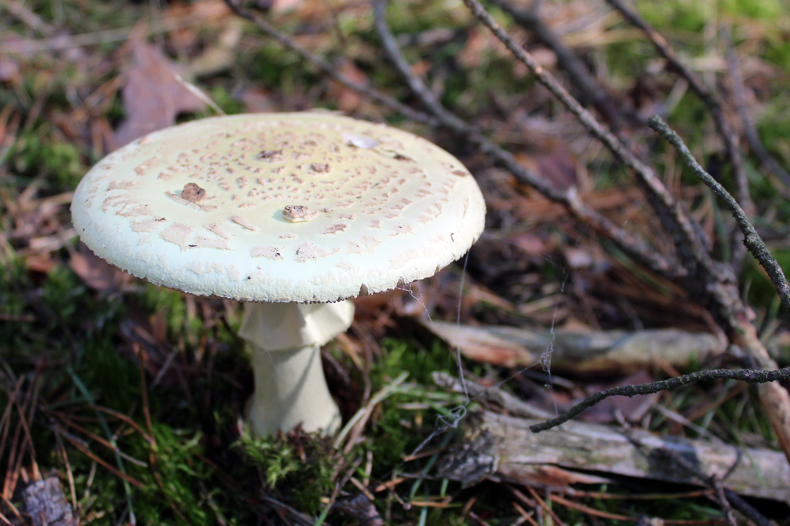
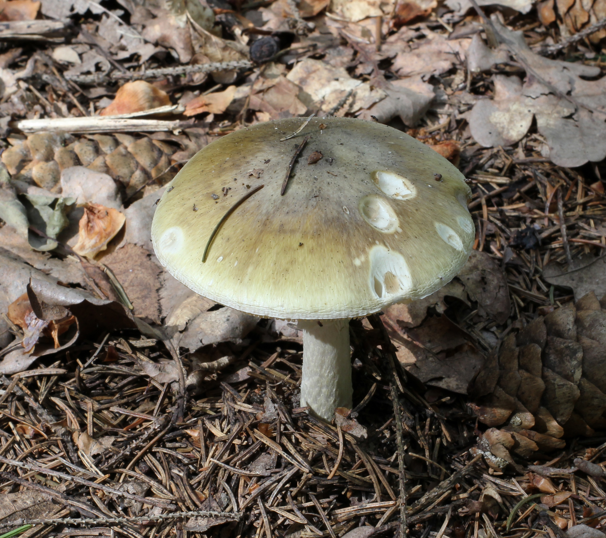
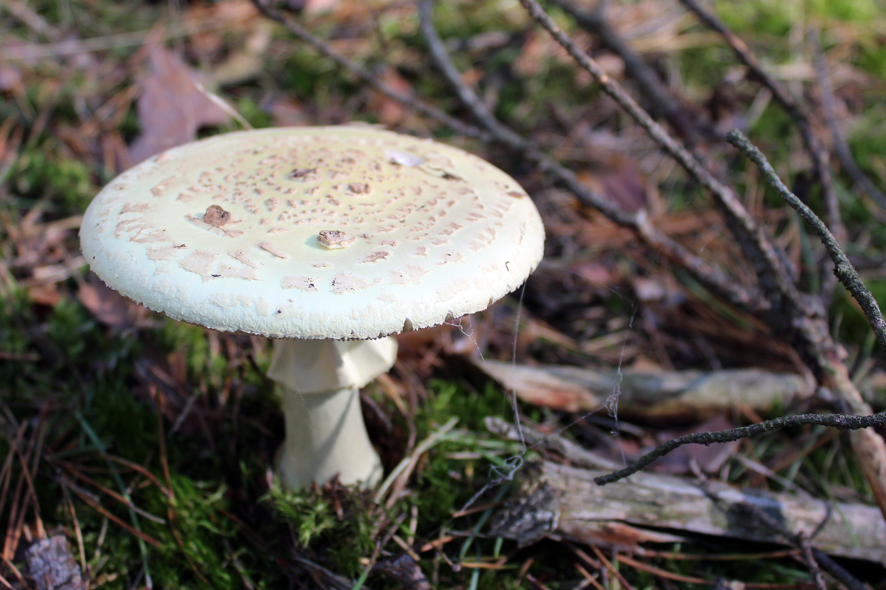

Charakterystyka
| Cecha | Opis |
|---|---|
| Kapelusz | 4 - 12cm, oliwkowozielony, źółtozielony, biały, rzadko z białymi resztkami osłony, czasem z jaśniejszym brzegiem, młody półkolisty lub jajowaty, później wypukły, w końcu rozpostarty, z drobnymi, wyrośniętymi promienisto włókienkami, suchy, matowy, wilgotny słabo błyszczący; brzeg nieprążkowany. |
| Blaszki | Białe, miękkie, wybrzuszone, gęste, wolne. |
| Trzon | Białawy, często oliwkowozielony, bladozielonkawy, pokryty zygzakowatym szarozielonym wzorem, cylindryczny ze szczytem nieco zwężonym, pełny, później watowaty; podstawa bulwiasta, z cząściowo odstającą, cząsto porozrywaną lub całą, białawą pochwą; pierścień bialawy, obwisły, prążkowany. |
| Miąższ | Biały, pod skórką kapelusza żółtawozielonkawy, delikatny. Zapach miodowy, z wiekiem silniejszy, odrażający, smak łagodny. |
| Zarodniki | 8 - 10µm, gładkie. Wysyp biały. |
Toksyczność
Muchomor sromotnikowy (Amanita phalloides) to grzyb wysoce toksyczny dla ludzi, odpowiedzialny za większość śmiertelnych zatruć grzybami na świecie. Dla wielu małych zwierząt, jak ślimaki czy owady, nie stanowi zagrożenia, jednak u człowieka nawet niewielka ilość może okazać się śmiertelna — wystarczy około 30 gramów, a duży owocnik może ważyć około 60 gramów.
Toksyczność tego grzyba wynika z obecności dwóch grup silnych związków chemicznych: fallotoksyn (w tym falloidyny, falloiny i fallicydyny) oraz amatoksyn, przede wszystkim alfa-amanityny. Toksyny te mają działanie cytotoksyczne i cyklopeptydowe, prowadząc do nieodwracalnego uszkodzenia wątroby, nerek oraz innych narządów. Warto podkreślić, że nie ulegają one zniszczeniu podczas gotowania, suszenia ani marynowania.
Objawy zatrucia pojawiają się dopiero po wielu godzinach od spożycia, zwykle między 8 a 16 godziną, co sprawia, że początkowo osoba zatruta może nie zdawać sobie sprawy z zagrożenia. Pierwsza faza zatrucia objawia się silnymi nudnościami, wymiotami, bólem brzucha oraz biegunką, czasem krwawą. Mogą wystąpić także bóle głowy, zawroty, przyspieszone tętno i trudności w oddychaniu. Po tej ostrej fazie często następuje krótkotrwała poprawa samopoczucia — jednak jest ona złudna. Toksyny nadal działają, prowadząc do postępującego uszkodzenia wątroby i nerek. W wątrobie dochodzi do martwicy i stłuszczenia komórek, zaniku glikogenu oraz ryzyka hipoglikemii, która może wywołać drgawki. Uszkodzenie nerek powoduje zaburzenia gospodarki elektrolitowej, mocznicę i narastającą niewydolność wydalniczą.
Toksyczne działanie obejmuje również inne narządy: w jelitach mogą pojawić się krwawe biegunki, w szpiku – niedokrwistość, a w sercu – stłuszczenie i zaburzenia funkcji, prowadzące do sinicy i niewydolności krążenia. Bez szybkiej interwencji medycznej zatrucie zwykle kończy się śmiercią w ciągu 2–3 dni, a w przypadkach mniej ciężkich objawy mogą utrzymywać się nawet 10–13 dni.